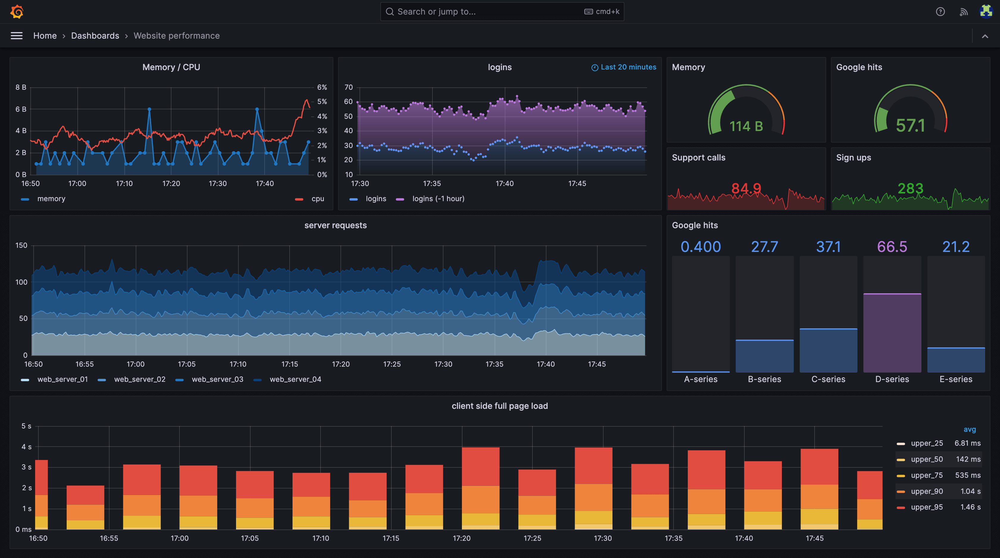
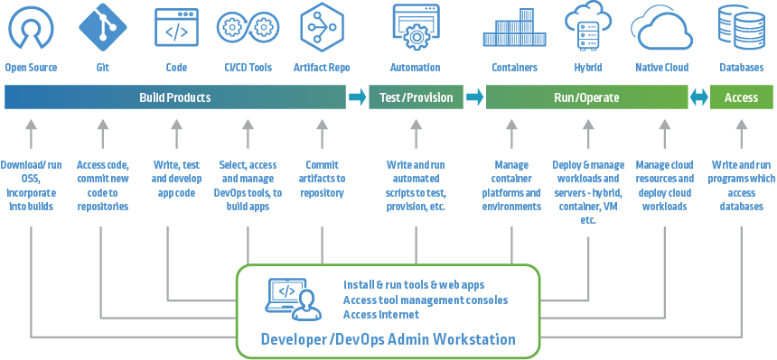

04 — DEV QA
Dev QA
Worked with Azure, Power Automate, Docker, Terraform, CI/CD pipelines, and Grafana to support cloud automation and monitoring.
I learned to use Terraform for cloud provisioning, Power Automate for workflow automation, and Grafana for live system monitoring — building a complete DevOps loop.

Docker
Azure

Grafana
